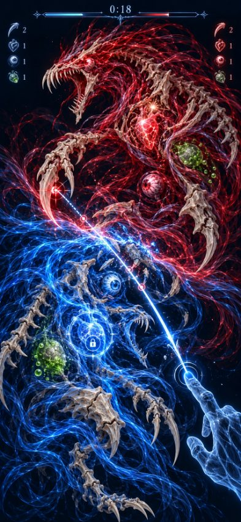
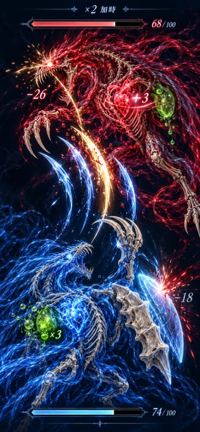
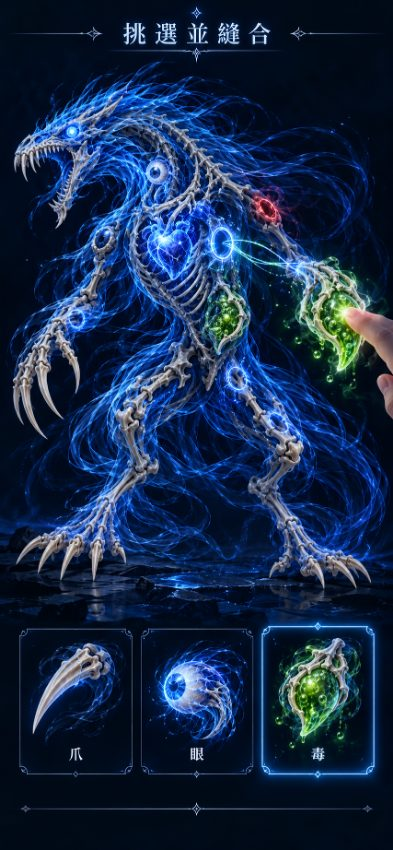

素材：製作人以 ChatGPT 生成的正式素材（assets/final/，縮小自 the-cut cut-battle/assets/）；?assets=placeholder 可切回從目標圖裁出的暫代素材。程式：src/art/sprites.ts、src/art/polygon.ts。單一畫面全螢幕：?only=cut｜battle｜stitch｜feel。v0.3：切割期本體調暗（alpha 0.45、飽和度 0.4），戰鬥期恢復。